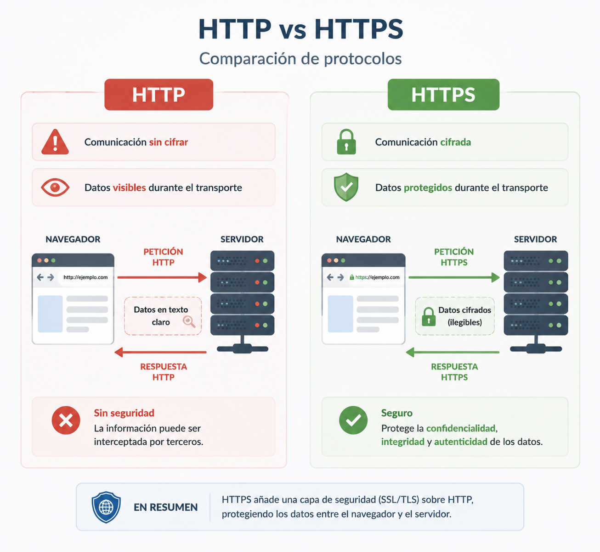

5. jarduera. HTTPS eta ziurtagiri digitalak¶
Helburuak¶
Jarduera hau amaitzean gai izango zara:
- HTTP eta HTTPS arteko aldea ulertzeko.
- HTTPSk komunikazioak zergatik babesten dituen azaltzeko.
- Ziurtagiri digitalen eginkizuna identifikatzeko.
- Ziurtapen Agintaritza (CA) baten funtzioa ulertzeko.
- Nabigatzailea erabiliz ziurtagiri digital bat ikuskatzeko.
Beharrezko materiala¶
Jarduera hau egiteko honako hau beharko duzu:
- "HTTPS eta ziurtagiri digitalak" kapitulua.
- Web nabigatzailea.
- Interneteko konexioa.
- Nabigatzaileko garapen-tresnak (aukerakoa).
Testuingurua¶
Erabiltzaile bat web aplikazio batera sartzen denean, informazioa nabigatzailearen eta zerbitzariaren artean bidaiatzen du.
Komunikazio hori HTTP bidez egiten bada, bitartekari orok igorritako informazioa irakur lezake.
HTTPSk segurtasun-geruza bat txertatzen du, ziurtagiri digitaletan eta zifratzean oinarritua, eta honako hauek bermatzen ditu:
- informazioa zifratuta bidaiatzen duela;
- zerbitzariak bere identitatea frogatu dezakeela;
- edukia ez dela aldatu transmisioan zehar.
HTTPSri esker, segurtasunez erabil daitezke online banka, merkataritza elektronikoa edo hezkuntza-plataformak bezalako aplikazioak.
Adibide gidatua¶
Begiratu hurrengo irudia.

Orain begiratu nola esku hartzen duen Ziurtapen Agintaritza batek.

Nabigatzaile batek HTTPS konexio bat ezartzen duenean, modu sinplifikatuan, honako prozesu hau gertatzen da:
- Nabigatzaileak web orria eskatzen du.
- Zerbitzariak bere ziurtagiri digitala bidaltzen du.
- Nabigatzaileak egiaztatzen du ziurtagiria konfiantzazko Ziurtapen Agintaritza batek jaulki duela.
- Egiaztapena zuzena bada, komunikazio zifratua hasten da.
TxurdiGest-era aplikatutako adibidea¶
Irudika ezazu irakasle bat etxetik TxurdiGest-era sartzen dela kalifikazioak sartzeko.
Aplikazioak HTTP bakarrik erabiliko balu:
- erabiltzaileak bere pasahitza zifratu gabe bidal lezake;
- hirugarren batek komunikazioa atzeman lezake.
HTTPS erabiliz:
- kredentzialak zifratuta bidaiatzen dute;
- nabigatzaileak zerbitzariaren identitatea egiaztatzen du;
- komunikazioa askoz seguruagoa da.
Egiaztatu ulertu duzula¶
Erantzun hurrengo galderei.
-
Zer alde dago HTTP eta HTTPS artean?
-
Zer funtzio du ziurtagiri digital batek?
-
Zer eginkizun betetzen du Ziurtapen Agintaritza batek?
-
Zergatik agertzen da giltzarrapo bat nabigatzailearen helbide-barran?
Banakako jarduera¶
Zuk zeuk probatu
Aztertu web orri seguru baten ziurtagiri digitala.
Erabil ditzakezu, adibidez:
- https://www.google.com
- https://github.com
- https://www.ehu.eus
- HTTPS erabiltzen duen beste orri bat.
Egin honako pauso hauek.
- Ireki orria.
- Egin klik web helbidearen ondoan dagoen ikonoan (giltzarrapoa edo gunearen informazioa, nabigatzailearen arabera).
- Sartu ziurtagiriaren informazioan.
- Begiratu erakutsitako datuak.
Osatu hurrengo taula.
| Informazioa | Behatutako balioa |
|---|---|
| Babestutako domeinua | |
| Erakunde jaulkitzailea | |
| Ziurtapen Agintaritza | |
| Iraungitze-data | |
| Erabilitako algoritmoa (agertzen bada) |
Aztertu ziurtagiria¶
Erantzun.
-
Bat dator ziurtagiriaren domeinua bisitatutako orriarekin?
-
Nork jaulki du ziurtagiria?
-
Noiz arte da baliozkoa?
-
Zer gertatuko da iraungitzen denean?
Tip
Ziurtagiri digital guztiek balio-epe mugatua dute, eta aldian-aldian berritu behar dira.
Tresna profesionalak¶
Web nabigatzailea¶
Nabigatzaileek zerbitzari batek instalatutako ziurtagiri digitalak ikuskatzeko aukera ematen dute.
Informazio hori oso erabilgarria da honako hauetarako:
- zerbitzariaren identitatea egiaztatzeko;
- iraungitze-data egiaztatzeko;
- Ziurtapen Agintaritza identifikatzeko;
- HTTPSrekin lotutako arazoak diagnostikatzeko.
Note
Nahiz eta nabigatzaileak egiaztapen guztiak automatikoki egin, garatzaile batek ziurtagiriak ematen duen informazioa interpretatzen jakin behar du.
Aplikazioa erronkan¶
Erronkan garatutako aplikazioa HTTPS erabiliz zabaldu beharko da.
Garapenean tokiko ingurune bat erabil badaiteke ere, Interneten argitaratutako edozein aplikaziok ziurtagiri digital baliozkoak erabili beharko ditu.
Taldeak hau ulertu beharko du:
- ziurtagiriak zerbitzaria identifikatzen duela;
- HTTPSk komunikazioak babesten dituela;
- nabigatzaileek automatikoki egiaztatzen dutela ziurtagiriaren konfiantza.
Ohiko erroreak¶
Warning
Ohiko errore batzuk hauek dira:
- HTTPSk aplikazio bat edozein erasoren aurrean babesten duela pentsatzea.
- Nabigatzaileak baliozkoak ez diren ziurtagiriei buruz ematen dituen abisuak ezikustea.
- Giltzarrapoak orri bat guztiz segurua dela bermatzen duela sinestea.
- Zifratzea eta autentifikazioa nahastea.
Jardueratik harago¶
Hurrengo proposamenak borondatezkoak dira. Gai honetan sakondu edo ziurtagiri digitalekin lotutako alderdi osagarriak ikertu nahi dituztenentzat pentsatuta daude.
1. proposamena¶
Alderatu hiru web orri desberdinen ziurtagiri digitalak.
Zer desberdintasun aurkitzen dituzu haien artean?
2. proposamena¶
Bilatu iraungitako edo baliozkoa ez den ziurtagiria duen web orri bat.
Zer mezu erakusten du nabigatzaileak?
Zergatik eragozten du zuzenean sartzea?
3. proposamena¶
Ikertu zer den Let's Encrypt.
Zergatik aldatu du Interneten HTTPS ziurtagiriak zabaltzeko modua?
Ikertu
Jakin ezazu zer gertatzen den nabigatzaile batek ziurtagiri bat jaulki duen Ziurtapen Agintaritza ezagutzen ez duenean.
Nola erreakzionatzen du nabigatzaileak?
Zer arrisku egongo lirateke erabiltzaileak abisu hori ezikusiko balu?
Gogoratzeko¶
- HTTPSk nabigatzailearen eta zerbitzariaren arteko komunikazioa babesten du.
- Ziurtagiri digitalek zerbitzaria identifikatzea ahalbidetzen dute.
- Ziurtapen Agintaritza batek ziurtagiriaren konfiantza bermatzen du.
- Ziurtagiriek iraungitze-data dute.
- Nabigatzaileek automatikoki egiaztatzen dute ziurtagiriaren baliozkotasuna konexio segurua ezarri aurretik.